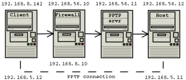

Poptop Questions & Answers
Last Updated: 2005-11-16 Q&A mostly compiled from the Poptop SourceForge Mailing List and the Howto/FAQ by Jeff Blaize <jblaize@netops.mediaplex.com>. Questions
Q.
I want to provide another netmask to the Windows PPTP client. I set the option
"netmask
You have to renumber, set the client IP configuration static, or have the person on the clientmachine execute a batchfile which fixes things. Q. I can connect to the server and ping to it fine, but I can't ping any other hosts on the office subnet. I have ip-forwarding turned on and I have proxyarp set in the ppp/options file. What can be wrong? A. There seem to be a lot of questions floating around about routing and masq'ing associated with this issue. Well, my curiosity got the best of me, so I thought I would check this out. Shown below is my test setup for investigating this problem. For the sake of simplicity, we will ignore address translation issues associated with the firewall. This assumes that the client at 192.168.8.142 is going to use 192.168.56.11 as its target address for the pptp connection to pptp_srvr. The firewall will block all access to the 192.168.56.0 subnet except for pptp connections associated with pptp_srvr. This can be implemented with, for example, ipchains ipchains -P input DENY ipchains -P forward DENY ipchains -A input 192.168.56.0/24 -j ACCEPT /* allow connections from inside */ ipchains -A input -p tcp -d 192.168.56.11 1723 -j ACCEPT ipchains -A input -p 47 -d 192.168.56.11 -j ACCEPT ipchains -A forward -p tcp -d 192.168.56.11 1723 -j ACCEPT ipchains -A forward -p tcp -s 192.168.56.11 1723 -j ACCEPT ipchains -A forward -p 47 -d 192.168.56.11 -j ACCEPT ipchains -A forward -p 47 -s 192.168.56.11 -j ACCEPT ipchains -A forward -i ppp+ -d 192.168.56.0/24 -j ACCEPT /* allow from clients to inside */ ipchains -A forward -i ppp+ -s 192.168.56.0/24 -j ACCEPT /* allow from inside to clients */ When you connect from client to pptp_srvr, you will be able to complete the connection and ping to pptp_srvr. However, if you attempt to ping host, at 192.168.56.12, this will fail. A clue to this problem can be found in the /var/tmp/messages file on pptp_srvr. There, in the pppd messages, you will find Cannot determine ethernet address for proxy ARP This is due to an issue with the pppd program, which attempts to find a hardware interface on the subnet to which the pppd client has been assigned. In this case its looking for a hardware interface on the 192.168.5.0 subnet. It will fail to find one, and will drop the proxyarp request. The simplest way around this problem, and the one that is suggested in the pppd documentation, is to set the pppd client IP assignment to be on the local subnet. An example in this case might be 192.168.56.129. However, it may not be possible to do that. In the case of a fully loaded subnet, there may not be any addresses to spare. Or there may be some security issues with giving out local subnet addresses. What to do? The place to look is in the arp table. If you run tcpdump on host (192.168.56.12) during the time when client is pinging, you will see unanswered arp requests from host attempting to find the hardware address for 192.168.5.12. You need to proxy the hardware address of the pptp_srvr for client in order for this request to be fulfilled. This is the job of proxyarp. However, proxyarp has let us down in this instance, and we need to find a workaround. This can be done manually using the arp command on pptp_srvr. For example, if the hardware address of the ethernet card on pptp_srvr is 00:60:08:98:14:14, you could force the arp to proxy the client pptp address by saying arp --set 192.168.5.12 00:60:08:98:14:13 pub You should now be able to ping from client to host through the pptp connection. This can be a problem, however, in a dynamic environment when clients are logging into and out of the pptp server on a continuous basis. One way around this problem is to write a script that will execute upon the initiation of each ppp connection. The place to do this is in /etc/ppp/ip-up. This script is executed each time a new ppp connection is started. It gets some variables passed into it, one of which is the assigned IP address of the client. Note that RedHat systems use ip-up.local as the place for you to make the script. Don't forget to chmod +x ! #! /bin/bash REMOTE_IP_ADDRESS=$5 date > /var/run/ppp.up echo "REMOTE_IP_ADDRESS = " $REMOTE_IP_ADDRESS >> /var/run/ppp.up arp --set $REMOTE_IP_ADDRESS 00:60:08:98:14:14 pub >> /var/run/ppp.up exit 0 This should put you in business for accessing the remote subnet under this scenario. I am a little bit concerned, however, because I also built a script ip-down.local, that should remove the arp proxy when client disconnected. It doesn't seem to do anything, however, and if I try to delete the arp entry manually, it just spits out a cryptic error message. The arp entries remain persistent, as far as I can tell. If this is a problem or not, I don't know. The next few clients that log in are treated well, so I guess its OK. Q. Also, after running pptpd and monitoring its log file and seeing that it failed to open ttyp1 - I chmod +rw /dev/ttyp[0-9] and it seemed to work somewhat. But, after I rebooted, I had to do this again. Is this normal? A. pptpd should be running as root (unless you have a system with a setuid openpty() helper, which isn't very common). If it fails to open a pty/tty pair as root then that is probably because it is in use. Other programs which use pty/tty's will change their permissions back to the standard ones. Q.
Sometimes when I make a connection to my pptpd server I see a message like
A. Yeah, in your /lib/modules/`uname -r`/net/ directory, there should be files called bsd_comp.o and ppp_deflate.o.. insmod those files and you'll be good to go. Q. Hi, I'm having trouble getting pptpd & mschap-v2 to work. I downloaded all of the patches and compiled everything but whenever i try to connect, it says: Error 691: The computer you have dialed in to has denied access because the username and/or password is invalid on the domain. What is this suppose to mean? A. Error 691 is an authentication problem probably due to the fact that MS chap uses the domain name and username combo to authenticate. If you look at the logs you will probably see a message saying that MS chap is trying to authenticate user "domain\\username". I got it to work by putting the full domain and user string in the client portion of the chap-secrets file.# Secrets for authentication using CHAP # client server secret IP addresses workgroup\\user server password * There is also a patch called chapms-strip-domain out there which strips off the domain. Q. How do I go about checking who is logged in via tunnel? I need some way of writing the pppd data to wtmp/utmp. (and not sessreg either) does anyone know of any way of doing this via ppp? A. You will find a pptpd-logwtmp plugin in pptpd version 1.2.1 and later, which if enabled will maintain the /var/log/wtmp file so that who and last will show you the logins. Alternatively, pppd syslogs everything to /var/log/messages (that's the default on my box anyways) and it will say something like : pppd[15450]: CHAP peer authentication succeeded for you could do a tail /var/log/messages -n2000 | grep CHAP if you wanted to see who has been logging in. All the authentication is provided by pppd (if you don't have an auth or a require-chap or pap, etc.) option, it doesn't even ask for a username. Q. My NT client won't connect!
A.
Try turning header and software compression off.
Q. PPTP *client* stops working. A. go to /var/run/pptp/ and look for a socket named x.x.x.x delete it and try it again. Q. How many clients does Poptop support? A. The limits under Linux are:
So it seems that 2048 will be the limit, if you fix a few things and with a minor kernel mod. To go above 2048 the easiest approach would be to combine pptpctrl and pppd in one process, which would get you to 4096. Beyond there, you need to go for a select() based model, which would be significant coding effort and require large fd-set sizes and so on. So 4096 is the practical limit, and 2048 the easy limit. -- Note: This was taken from Jeff Blaize's howto. Q. What authentication methods (PAP/CHAP) does Poptop work with? A. Poptop uses whatever authentication methods your PPPd provides (usually PAP, CHAP, MSCHAP and MSCHAPv2). To use MPPE, MSCHAPv2 is required. Q.
When running Poptop I get the following error:
A. I'd say at a guess you've only configured one IP address and you have connected a client, and as such there are no more free connection slots should any more clients wish to connect. Q. Does Poptop suffer from the same security flaws (http://www.counterpane.com/pptp.html) as the Windows NT PPTP server? A. An initial look at the article suggests that what the authors hammered was not the PPTP protocol, but the authentication that the PPTP VPN servers on NT offered access to via open internet. PPTP seems initially to be just the path to the weakness, not the weakness itself. Part of their observance of weakness deals with use of poor passwords as well, a cheap component, simple enough to fix.
> While no flaws were found in PPTP itself, several serious flaws were The authors do not specifically say "this is ONLY effective against NT", just that NT is affected. This implies that they do not recognize Poptop, and it may be included. The fact that Poptop has to interOp with MS DUN's VPN client means that it will have the same weaknesses. It can only protect itself from DoS attacks, have immediate response to out-of-sequence packets or illogical packets, etc. The protocol is not considered weak in this analysis, but the weaknesses have to be replicated in apparent behavior by Poptop. The only thing the developers can do with Poptop is make it a stronger server per se -- more able to handle the attacks when the come. In conclusion: Poptop suffers the same security vulnerabilities as the NT sever (this is because it operates with Windows clients). Update: MSCHAPv2 has been released and addresses some of the security issues. Poptop works with MSCHAPv2, which is implemented in pppd. Q. Does Poptop support data encryption? A. Yes, in that it uses PPP for it. PPP 2.4.2 or later contains support for MPPE, and you may need to use the ppp_mppe.o kernel module provided by the PPP project. This module was merged with kernel sources from 2.6.15-rc1. See the PPTP Client Project for generic and specific instructions on adding MPPE support to kernels below 2.6.15-rc1. Q. Poptop or IPsec? Which is better suited to my needs? A. Here are some reasons I can think of:
Q. I get a 'createHostSocket: Address already in use' error! what gives? A. Address already in use in createHostSocket means something is already using TCP port 1723 - maybe another pptp daemon is running? Q. Does Poptop work with Windows 2K or XP clients? A. Poptop v0.9.5 and above should work with Windows 2K and XP clients. Q. I cannot connect from more than one computer at the same time.
A.
PPTP uses protocol GRE (47) for it's tunnel. When two clients behind a single NAT firewall
connect to the same PPTP server, their source IP address will be rewritten by their firewall.
In this case, the GRE sockets in two pptpctrl processes will be reading GRE packets from both
clients. The only way to distinguish between those two clients is to filter them by destination
call ID number found in the GRE header. In order for the client NAT firewall to correctly rewrite
the PPTP server's replies, please check Philip Craig's netfilter pptp helper module available from the
Netfilter CVS server: Q. When I disconnect from Workstation One then I can't connect from Workstation Two. A. See answer 17. Q. Why 2 sets of IP's in pptpd.conf (remoteip and localip)? A. PPTP is a point-to-point connection. localip is the ip of the ppp adapter on the server-side. remoteip is the ip of the client. Q. How do I set up authentication against SAMBA?
A.
You can go about this two ways:
Note: submissions welcome to explain this further; as per a mailing list thread, we don't appear to have any smb_auth.patch anywhere. Update: mailing list archives have a posting from Ramses Pinxteren that mentions a couple of patches. Thanks to Sven Schuster. Q. How do I set up authentication against LDAP?
A.
You can go about this two ways:
For more details (and patched pppd) go to http://www.kalamazoolinux.org/projects/awilliam/ldap.html. The user who reported this had to modify auth.c to fit to the LDAP server. Q. Windows XP clients do not work.
A.
There are two similar things that seem to affect winXP pro:
2-Apr-2003: A 'vpn' patch will be present in XP SP2, but no details of exactly what the patch fixes. Could be that it will fix all these problems. 8-Apr-2003: User comment: I upgraded XP to SP1 level....and now it works! Q. GRE: read(fd=5,buffer=804d720,len=8196) from PTY failed: status = -1 error = Input/output error
A.
The log will display something like this: Q. Can I now also access SMB shares from clients outside the network? And how do I do that?
A.
It helps PPTP performance quite a bit if you use a WINS server. Q. Why are there Out Of Order drops of fragmented packages?
A.
Microsoft Point-to-Point Tunneling Protocol (PPTP) discards all packets that are received out of sequence.
This is likely to happen over networks, such as the Internet, where multiple packets may take different
routes to a common destination. Q. What are these version numbers on PPP packages? On the project file list, there are a number of different versions of ppp-2.4.3, e.g. ppp-2.4.3-0.cvs_20040527.X.i386.rpm where X can have the value 1, 2, 4 and 6. What is the difference between these versions? A. They are packaging versions. Changes in these version numbers represent changes in packaging, which is the translation from .tar.gz to .rpm. They represent changes made by the packager, not changes made to the upstream version. So in the string ppp-2.4.3-0.cvs_20040527.X.i386.rpm, this is version 2.4.3 of PPP cut from PPP CVS as of 2004-05-27, and has been revised X times by the packager. Usually packaging changes represent packaging issues; changes of how the package is built or installed into the filesystem. Sometimes a patch may be included, to increase compatibility with the target distribution, or to fix an urgent problem without grabbing a whole new upstream version. Why do we keep the old ones around? Sometimes people ask for them. Some of the HOWTOs and instructions make reference to a specific version, and were tested with that version. It's helpful to the end user to know which particular package version a HOWTO was written from. (Although that mainly affects the PPTP client side of things, the client project uses the PPP packages from the PPTP server project.) So we would expect you to use just one RPM for a system. You can find more information on software release practice in Eric Raymond's Software Release Practice HOWTO. You can find more information on the release history of the PPP package in the PPTP Client FAQ. |